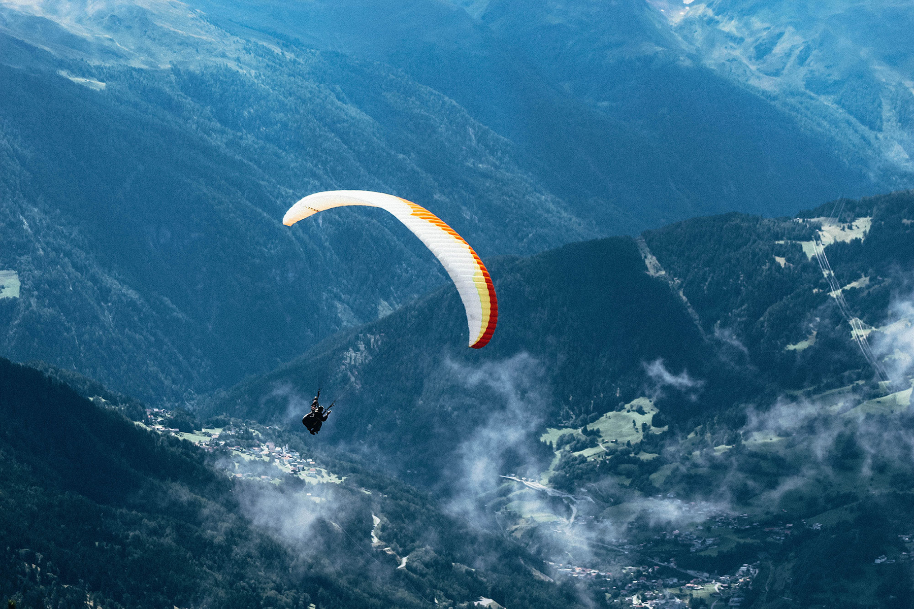

HALO (high altitude low opening) jumps are typically used by the military for the delivery of people and equipment into hard to reach areas via air transport. It is also known as military freefall (MFF). HALO and HAHO (high altitude high opening) jumps are also made by civilian skydivers but with much less frequency due to the special equipment and permissions needed to do so.
The term HALO stands for High Altitude Low Opening. Broken down, the first part (high altitude) refers to the higher than normal altitude from which the jumpers exits the aircraft. On a typical skydive, the exit altitude is somewhere between 10,000 to 14,000 feet, depending on the aircraft and the location. This means the skydiver will be in freefall for around 60 seconds before deploying their parachute and gliding back to earth. In a HALO jump, the exit altitude is much higher, often around 30,000 feet - which means the jumper has further to fall and also requires special equipment to allow them to breathe freely so high up. The latter part of HALO stands for 'low opening'. This refers to the height at which the parachute is deployed by the jumper. In a normal skydive, this will be somewhere around 3,000 to 4,000 feet. For a HALO jump, the deployment altitude can be the same or much lower, depending on the requirements of the drop.
Normally, civilian skydivers do not make HALO jumps. Civilian skydivers tend to jump from altitudes of up to 14,000 feet, using much smaller parachutes with the goal of enjoying the view, having fun and getting the adrenaline buzz. That said, ask any skydiver and it's likely on their bucket list to go a bit higher and fall for a bit longer. The thing is that HALO jumping requires special equipment and special permissions, so there are only a few places that offer HALO jumps in the US. This comes primarily from the fact that skydiving aircraft are not pressurized like the commercial airplanes you might be used to. This is fine up to the standard altitudes as there is enough oxygen in the air. Go too much higher though, and the oxygen thins out, making it difficult to breathe. HALO jumpers use oxygen masks on their way to altitude and prepare in advance for the reduced oxygen conditions.
The highest HALO jump used to be that of Felix Baumgartner, who famously jumped from 128,000 feet. However, not long after, Alan Eustace of Google made a jump from 135,908 feet, surpassing the previous record and making him the highest HALO jumper ever.
Back to Course Home Page